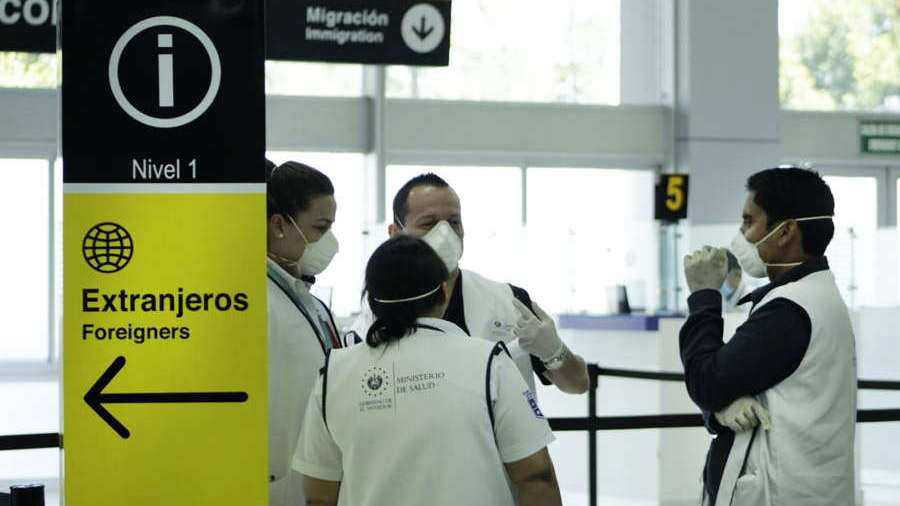
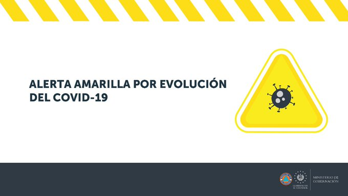
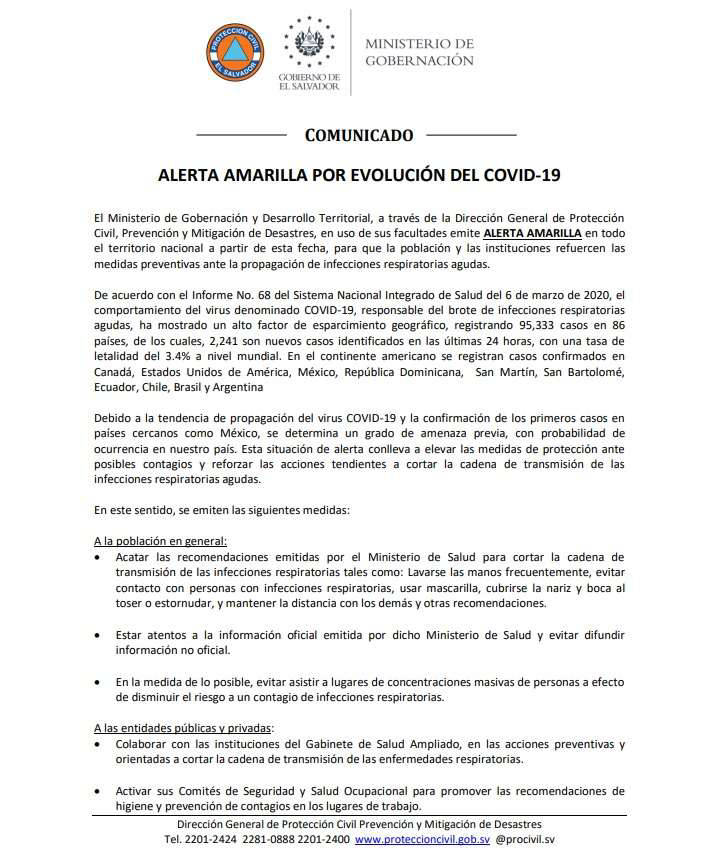

"Debido a la tendencia de propagación del virus COVID-19 y la confirmación de los primeros casos en países cercanos como México, se determina el grado de amenaza previa", explicó Protección Civil

La Dirección General de Protección Civil emitió esta tarde alerta amarilla en el territorio salvadoreño para reforzar medidas preventivas por la propagación del nuevo coronavirus.
“De acuerdo con el informe No. 68 del Sistema Nacional Integrado de Salud del 6 de marzo de 2020, el comportamiento del virus denominado COVID-19, responsable del brote de infecciones respiratorias agudas ha mostrado un alto factor de esparcimiento geográfico”, explica el comunicado.

“Debido a la tendencia de propagación del virus COVID-19 y la confirmación de los primeros casos en países cercanos como México, se determina el grado de amenaza previa, con probabilidad de ocurrencia en nuestro país”, declara el comunicado del Protección Civil.
En Latinoamérica, la enfermedad se ha presentado en Brasil, Argentina, México, Perú, República Dominicana, Chile, Ecuador, Costa Rica y Colombia. Hasta el momento no se reportan víctimas mortales en la región. Con la emisión de la alerta amarilla, las autoridades piden cumplir con las recomendaciones del Ministerio de Salud para prevenir la transmisión de infecciones respiratorias, así como mantenerse pendientes de información oficial y evitar la visita de lugares con concentración masiva de personas. Protección Civil aseguró que en coordinación con el Ministerio de Salud brindarán a la población los detalles de la evolución del virus.
La epidemia del nuevo coronavirus ha contagiado ya a más de 100,000 personas en todo el mundo, y el nerviosismo que se apodera del mundo por su propagación volvieron este viernes a desplomar bolsas y petróleo y obligaron a cancelar eventos.
